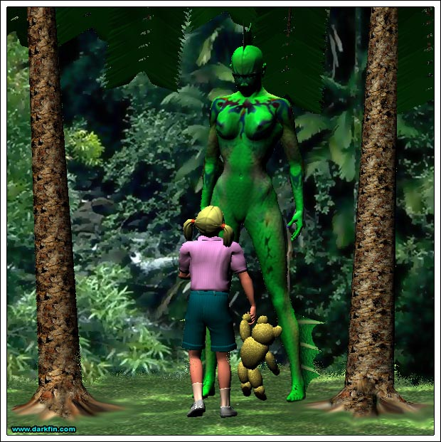
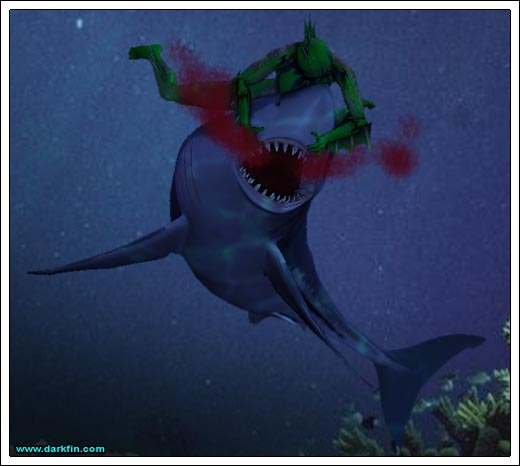
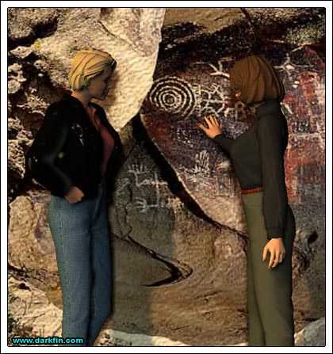

Erika (Still playing) What's the problem, dear brother, and you better not say my music
KJ No, I'm just at a loss as to what to do next
Erika Do about what?
KJ Morrigan
Erika (Taking a seat next to him) What about Ms. McBride?
KJ Things aren't looking real good - I was just on the phone with Sutter and he says that the case against her is firming up
Erika She hasn't even been officially charged yet
KJ It's only a matter of time - they want to make it as airtight as possible before going through the formalities
Erika Well, Sutter isn't the only criminal defense attorney out there - maybe you should talk to...
KJ LOOK, RIKKA, I DON'T TELL YOU HOW TO DISSECT FISH - I THINK I KNOW A LITTLE MORE ABOUT THE LAW THAN YOU DO
Erika (Taking his hand) Kage, relax - I'm sorry - I wasn't trying to be disrespectful, I was just trying to offer a suggestion
KJ (Now pacing) Don't you think that I have been racking my brain, trying to come up with other solutions? - Sutter is the best criminal defense attorney in all of California and he's doing this as a personal favor to me
Erika I know - but we have resources, we can get whom or whatever we need to help Morrigan
KJ You try convincing her of that - she insists on paying me back for the legal fees and for the security around her house
Erika (Scowling) Silly pride
KJ Would you act any different if you were in her shoes?
Erika I suppose not... I wish I could do more
KJ Right now, you're the best thing going for her - it was damn lucky you literally ran into her that night
Erika It's only a partial alibi
KJ A partial alibi is better than no alibi at all
Erika Maybe I could change my story to make it more beneficial to her
KJ NO, ABSOLUTELY NOT - do you even know what you're suggesting?
Erika I want to protect her interests
KJ WHY? - you barely know her - you wouldn't even lie for mom's DUI and here you want to protect a possible murderer?
Erika (Curt) You think she did it?
KJ No... but I am more than a little curious as to why you would be willing to risk perjury for her?
Erika (Standing up and looking away from him) She's not like the others you've dated, is she?
KJ (Now on the defensive) Um... no, not al all
Erika (Turning to face him) You care for Morrigan very deeply, don't you?
KJ (Half smile) Yeah... is it that obvious?
Erika (Returning the smile) Kinda... I don't want to see that ruined because of a timing technicality
KJ Sis, I really appreciate what you're trying to do for me but it's not going to happen - your story needs to stay rock solid, if the prosecution has the slightest hint that you're willing to waffle for Morrigan, you're dead in the water and so is her defense
KJ Besides, I will not have my sister sink any deeper into this mess - two of the most important women to me are already in enough trouble
Erika Two?
KJ Morri and Oni
Erika (Stunned) Ona Rosa Sanchez? - what does she have to do with this?
KJ (Wringing his hands) Sutter told me of another card to play but it's out of the question
Erika What are you talking about?
KJ After Morrigan, the next highest-ranking suspect is Ona Rosa's father
Erika Frank Fiore can hardly move around!
KJ But he can fire a gun with no problem and his prints are all over the murder weapon
Erika That's purely circumstantial
KJ I've seen cases stick on less - Sutter wants to actively shift the focus onto him
KJ Listen, mom and dad are at the club, I promised to have dinner with them - wanna come with?
Erika No, not really
KJ C'mon, you need to get out - I'm tired of arguing with you about this
Erika Another time, I promise - I'm not up to dealing with mother in a public setting tonight
KJ You need a good meal
Erika I have something waiting for me in the fridge - besides, I was hoping to have some time to myself to rest
KJ (Throwing up his hands) Fine, the house is all yours then, have fun!
Erika (Popping the cap off of the needle) Time for a special treat!
Erika (Yawning and talking to herself) I'll let this settle into my system for a few hours and then drive up to Quartz Lake to complete the freshwater submersion testing
Erika (Preparing to open one) Once this has been accomplished, it will be one less hurdle to deal with and I can...
Erika NO - it... wasn't supposed... to happen... this quick - AAARRRGGHH
Erika (Diving into the duck pond) I have to change, NOW
Darkfin (Leaping out of the pound) I NEED... TO FEED
Darkfin I NEED TO KILL
Ben OK kids, who wants to try daddy's famous Blue Cheese Canadian Bacon Burger?
Palmer (Jumping over with is mouth open) I WANT ONE, I WANT ONE
Kayla (Practicing her dance moves next to the pool) EWW - when is mom going to get here?
Ben You know she's working late at the station
Kayla (Twirling) When isn't she working late at the station?
Ben Granddad will be here soon
Kayla Big thrill
Ben Kay... watch that attitude
Kayla Where's Auntie Ursula?
Ben She's... um, gone on a little trip to a spa up north, she'll be back soon
Palmer (Making a fierce face) GIMME BURGER, RRRRRR, FOOD
Ben Don't forget to masticate, son
Kayla Palmer, you are SO disgusting!
Ben (Looking around) Where's your sister?
Kayla (Rolling her eyes) Off searching for bugs - I'm going inside to wait for mom
Ben (Shouting) HANNAH, DINNER
Hannah (Laughing and poking at them) WIGGLY

Hannah POINTY
Ben HANNAH, COME GET YOUR DINNER... DON'T MAKE ME COME LOOK FOR YOU
Palmer Dad is getting mad - come eat now!
Hannah I wanna stay here
Palmer If you don't eat your burger, I will
Hannah Maybe green monster lady want some
Palmer The only monster around here is MEEE - RRRRRRGGHH
Darkfin (Tracking her target) This should help

Darkfin (Staggering to her lab table) This... did not go... as well... as expected
Morrigan (Studying her surroundings) Why have you directed me here, Joenne?
Joenne I thought it would be appropriate since this is the battleground - is it not, Morri? - or do I call you the "Marked One" or was it the "Annointed One?"
Morrigan I'm not sure what you're talking about
Joenne PLEASE, no more games - I think you have enough plates to spin already - don't add one more
Morrigan Why don't you tell me what you think you know?
Joenne (Climbing some rocks) Nu-uh, Babe, you go first
Morrigan (Reluctantly joining her) These hooded freaks, what you call "The Clergy," are after me for some reason - I believe they have framed me for the murder of Father Greg to stop an investigation I was beginning - an investigation into these grounds - grounds that are very valuable and not just for Native American history
Joenne Hmm, I don't think you've told me everything
Joenne BUT... since you've told me SOMETHING, I guess I can take a turn... you're right, these grounds hold something that is very important - The Clergy wants it and so does the United States government - what exactly "IT" is, no one is saying for sure... at least not to me - do you know?
Morrigan (Nonchalantly) I believe it might be oil
Joenne BZZZZ, WRONG - don't try to screw with me - anyway, digging for the aforementioned "IT" substance is imminent and that has Uncle Sam shitting his shorts - you see, forget about The Clergy, if it falls into the hands of a private corporation...
Morrigan They beat Washington to the oversized moneybags of global profit
Joenne (Applauding) Very good!
Morrigan How long have you been... "researching" this project?
Joenne I have been on this assignment for over a year now
Morrigan Has anyone else worked on it?
Joenne (Taking a deep breath) Uh, the one before me... was killed by The Clergy or at least we assume it was them
Morrigan I'm sorry but not surprised - tell me more about them - are they human?
Joenne WAIT A MINUTE, WAIT A MINUTE, WAIT A MINUTE - I've have given you more than enough info, it's your turn to spill some truth
Morrigan I don't know what else I can tell you
Joenne Why are you so important to them?
Morrigan I wish I knew
Joenne (Smacking Morrigan on the arm) YOU KNOW, YOU KNOW DAMN WELL
Morrigan I have an idea but it's not proven
Joenne I'm listening
Morrigan (Facing Joenne) Tell your superiors that if they keep me out of prison, I will tell them EVERYTHING they want to know - got it?
Joenne Even about the "aberration by your side?"
Morrigan (Cheeks flushing) What are you talking about?
Joenne The Clergy think someone... or something... is helping you - I think they're right

Joenne (Studying McBride's reaction) Look familiar?
Morrigan (Taking a step back) Um, no - I just wasn't expecting to see this
Joenne You really need to bone up... ha ha, pun intended... on your burial ground knowledge
Morrigan I was hoping to talk with Carmen Fiore
Joenne That's not likely to happen now, is it? - try the public library, Miss Journalist
Morrigan Do you know what these symbols mean?
Joenne A few - you see, the Chumash believed that the universe is made up of Three Worlds - the surface of the Earth is compared to an island surrounded by an ocean - this makes up the Middle World - above this lies the Upper World where powerful supernatural beings like Sun, Moon, Morning Star, and other "First People" live
Morrigan Sounds similar to most religious mythologies
Joenne It gets better... below The Middle World lies the Lower World, inhabited by dangerous creatures called "Nunashish" - these beasties come up to the Middle World at night to do their terrorizing
Morrigan (Softly) Fascinating
Joenne I'm still trying to figure out the robes and chanting part - most likely a tradition from the Spanish settlers
Morrigan Tell me more
Joenne I don't know about you but I've had my fill of Nunashish to last a lifetime
Morrigan Maybe we should go
Joenne Yep, the sun is setting, I don't want to be here in another ten minutes
Morrigan (Out the window) Talk to your superiors and let me know if we have a deal or not
Joenne (Winking) We'll be in touch, one way or the other!
Older Woman MAY YOU ROT IN HELL, PRIEST KILLER